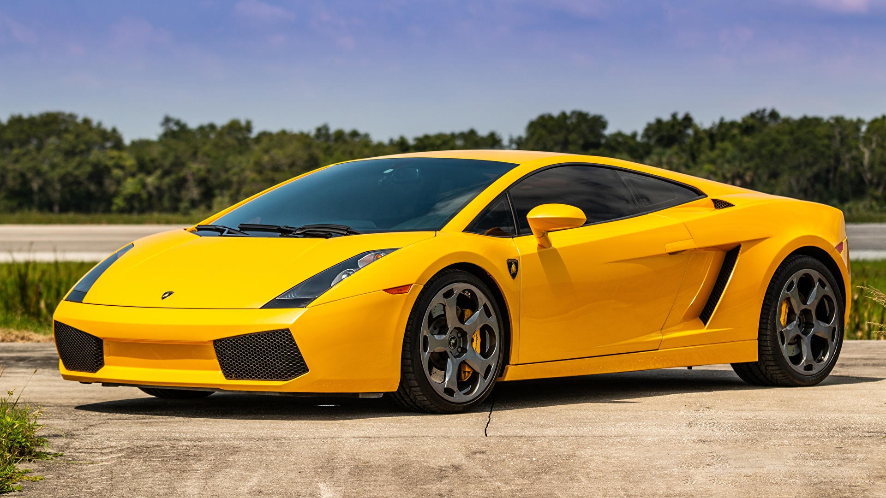
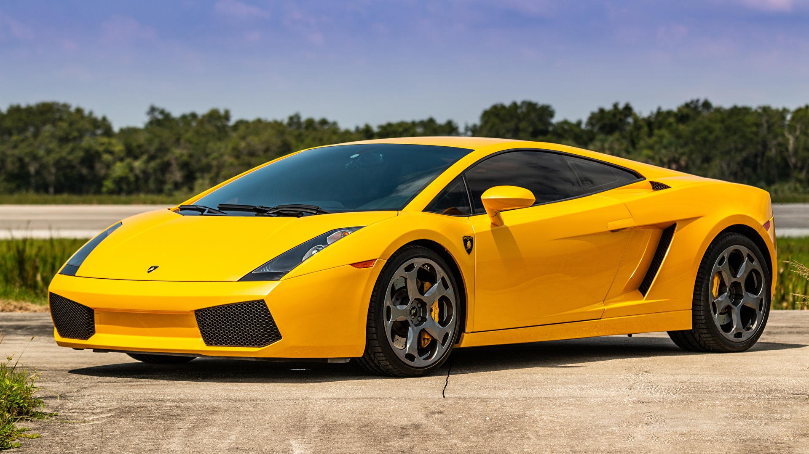

Un Desafío con Historia
La fundación de Lamborghini es un relato de audacia y visión. En 1963, Ferruccio Lamborghini, un empresario italiano que había hecho fortuna fabricando tractores, decidió enfrentar a gigantes como Ferrari. ¿La razón? Una disputa personal y su deseo de crear algo mejor. Ferruccio fundó Automobili Lamborghini en Sant’Agata Bolognese, decidido a construir vehículos deportivos que combinaran lujo extremo, diseño espectacular y una ingeniería sin compromisos.
El Nacimiento del Sueño
En 1964, Lamborghini debutó con el 350 GT, su primer automóvil deportivo. Equipado con un revolucionario motor V12 diseñado por Giotto Bizzarrini, este modelo no solo era potente, sino también elegante y refinado. El 350 GT marcó el inicio de la reputación de Lamborghini como un fabricante que desafiaba los límites del diseño y la ingeniería automotriz.
Revolución e Innovación
En 1966, Lamborghini transformó el mundo de los autos deportivos con el lanzamiento del Miura, el primer superdeportivo con motor central trasero. Este diseño no solo redefinió el rendimiento, sino que también estableció un nuevo estándar de estética y aerodinámica. La llegada del Countach en 1974 consolidó la audacia de la marca, presentando las emblemáticas puertas de tijera y un diseño futurista que parecía salido de un sueño.
A pesar de atravesar crisis económicas en los años 70 y 80, Lamborghini perseveró, lanzando modelos icónicos como el Diablo en 1990, que marcó el inicio de una nueva era de superdeportivos de lujo.
La Marca del Toro Enfurecido
El emblema de Lamborghini, un toro enfurecido, refleja perfectamente su filosofía: fuerza, determinación y un espíritu indomable. Cada modelo producido por la marca es una obra maestra de diseño y potencia. Vehículos como el Murciélago, el Aventador, y el híbrido Revuelto no solo son máquinas de velocidad, sino símbolos de lujo y exclusividad.
Dominio en las Pistas
Aunque Lamborghini no ha participado directamente en la Fórmula 1, ha dejado su huella en el automovilismo. Compite en prestigiosas categorías como GT3 y organiza la exclusiva serie Super Trofeo, donde los pilotos desafían los límites al volante de sus modelos más avanzados. Su enfoque en el rendimiento de pista ha influido en la tecnología y el diseño de sus superdeportivos de producción.
Una Leyenda que Inspira
Lamborghini es más que una marca automotriz; es un símbolo de rebeldía, innovación y lujo desenfrenado. Desde sus inicios como el sueño de un hombre hasta convertirse en un ícono global, Lamborghini ha transformado la manera en que vemos y sentimos la velocidad. Con un enfoque constante en el diseño vanguardista y la tecnología de punta, el toro enfurecido continúa avanzando, dejando un legado imborrable en las carreteras y en el corazón de los apasionados por los superdeportivos.
 
